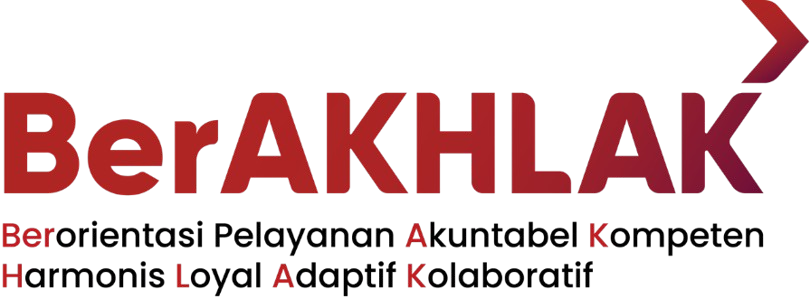
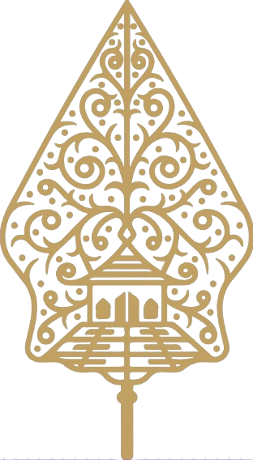

Portal Layanan Data
DDA Online Kabupaten Magelang
Selamat datang di layanan DDA Online. Gunakan tombol Akun DDA untuk melihat daftar akun instansi, lalu masuk ke sistem aplikasi melalui tombol DDA Online.


Selamat datang di layanan DDA Online. Gunakan tombol Akun DDA untuk melihat daftar akun instansi, lalu masuk ke sistem aplikasi melalui tombol DDA Online.